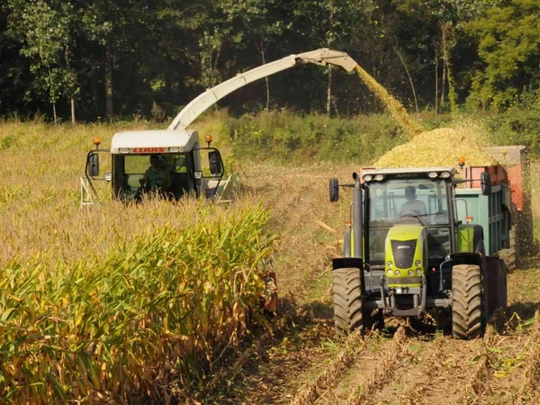
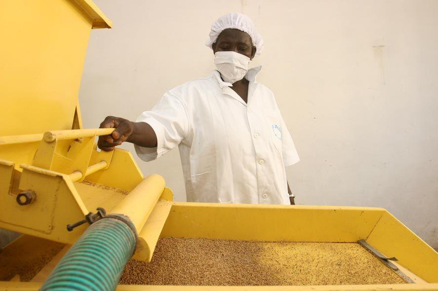
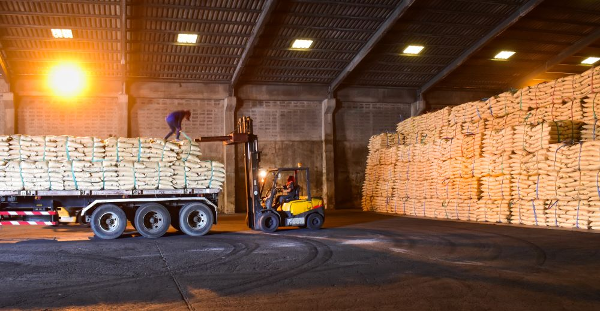

BIENVENUE SUR GAK-AGROTECH
Nous valorisons les produits agricoles ivoiriens à travers la production, transformation et la distribution.


QUI SOMMES-NOUS ?
Nous sommes GAK AGROTECH, une entreprise ivoirienne spécialisée dans la production, la transformation et la valorisation des produits céréaliers. Notre entreprise a été fondée en 2026 à Korhogo, au nord de la Côte d’Ivoire, une région reconnue pour son important potentiel agricole. GAK AGROTECH a pour ambition de contribuer au développement de l’agriculture ivoirienne en mettant en valeur les ressources agricoles locales et en proposant des produits céréaliers de qualité, accessibles et adaptés aux besoins des consommateurs. Notre activité repose principalement sur la production et la transformation de céréales cultivées en Côte d’Ivoire, notamment :
- Le maïs, utilisé dans la fabrication de plusieurs produits alimentaires et très présent dans l’alimentation ivoirienne ;
- Le sorgho, une céréale particulièrement adaptée aux conditions climatiques de certaines régions de la Côte d’Ivoire ;
- Le mil, une céréale traditionnelle riche en nutriments et importante dans l’alimentation de nombreuses populations.
NOS SERVICES
Chez GAK AGROTECH, nous développons une agriculture moderne et durable en proposant des solutions adaptées aux besoins de nos clients, de la production jusqu'à la livraison.

PRODUCTION
Nous cultivons le maïs, le sorgho et le mil, avec une attention particulière portée à la qualité de nos productions.

TRANSFORMATION
Nous valorisons les céréales locales grâce à leur transformation et leur conditionnement, afin de proposer des produits pratiques et adaptés aux besoins des consommateurs.

DISTRIBUTION
Nous assurons la commercialisation de nos produits auprès des particuliers, des restaurants, des commerces et d'autres professionnels.

LIVRAISON
Nous facilitons l'accès à nos produits grâce à un service de livraison permettant à nos clients de recevoir leurs commandes directement à l'endroit souhaité.